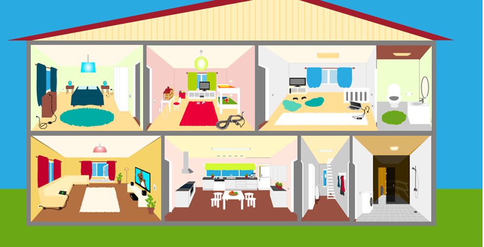
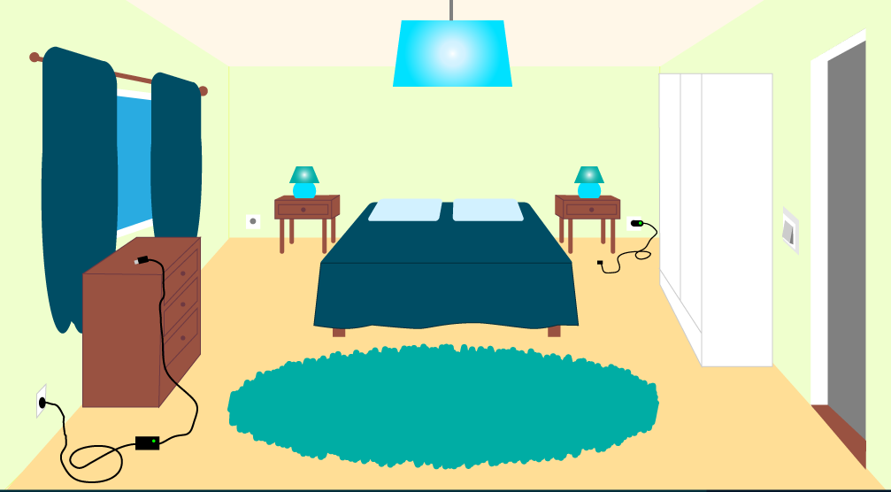

Oppimistehtävä 8 / TIE361 / Pelin opetuskäytön analyysi
Alustus
Valitsin peliksi energiapelin, joka löytyy linkistä: energiapeli. Pelissä käydään läpi talon huoneet ja klikkaillaan niistä pois päältä kaikki laitteet, jotka kuluttavat energiaa.
Aloitustilanne:  Esimerkki huoneesta, jossa laitteita klikkaillaan: 
Oppimistilanteen kuvaus
Peliä voisi käyttää alustuksena yläkoulun fysiikan tunnilla, jossa aletaan miettiä energiaa ja erityisesti kodin energian kulutusta. Tällaiset tunnit aloitetaan yleensä keskustelemalla, mitkä kaikki kodin laitteet kuluttavat energiaa ja mikä voisi kuluttaa eniten. Nyt aiheeseen voitaisiin johdatella pelin avulla, joka kenties herättää oppilaiden kiinnostuksen aiheeseen entistä tehokkaammin.
Pelin lisäarvo opetukseen/oppimiseen
Kyseisessä pelissä erityisen hyvää on se, että peli tuo käsiteltävän aiheen lähelle oppilaiden jokapäiväistä elämää. Koska pelissä liikutaan kotia esittävässä talossa, pystyy jokainen oppilas rinnastamaan varmasti ainakin muutaman pelissä esiintyvän, sähköä kuluttavan laitteen omasta kodistaan löytyviin vastaaviin laitteisiin. Näin peli siis yhdistää energian kulutuksen oppilaalle ennestään tuttuihin asioihin.
Perinteisesti tähän fysiikan aiheeseen johdatellaan pyytämällä oppilaita ensin miettimään ryhmissä, mitkä kodin laitteet kuluttavat sähköä. Sitten ryhmiltä pyydetään vastauksia aiheesta yhdessä keskustellen. Vastaukset kerätään tekstinä taululle kaikkien nähtäväksi.
Tähän malliin verrattuna peli tuo opetukseen/oppimiseen kaksi selkeää etua:
- visualisointi
- jokaisen oppilaan aktivointi
Peli huomioi etenkin sellaiset oppijat, jotka oppivat parhaiten visuaalisen informaation kautta. Tällaiset oppijat hahmottavat sähköä kuluttavat laitteet huomattavasti paremmin pelin pelaamisen jälkeen verrattuna siihen, että aiheesta olisi vain keskusteltu ja kerätty tekstiä taululle. Toki pelin pelaamisen jälkeen kannattaa toteuttaa myös keskustelu ja tulosten kerääminen taululle. Pelillä saadaan monipuolisuutta opetukseen ja huomioidaan entistä paremmin erilaisia oppijoita.
Toinen pointtini liittyy siihen, että pelkässä ryhmäpohdinnassa ja yhteiskeskustelussa moni oppilas saattaa tahattomasti tai tahallaan jäädä inaktiiviseksi osallistujaksi. Peli ratkaisee hiukan tätä ongelmaa. Laitetaan kaikki oppilaat pelaamaan peliä itsenäisesti, niin jokainen joutuu varmasti ainakin hiukan miettimään aihetta ensin itse. Ja tämän jälkeen saadaan varmasti myös entistä enemmän aktiivisuutta yhteiskeskusteluun.
Tavoitteet
Tavoitteet liittyvät seuraaviin OPS:ssa esitettyihin fysiikan oppimistavoitteisiin:
- T3: ohjata oppilasta ymmärtämään fysiikan osaamisen merkitystä omassa elämässä, elinympäristössä ja yhteiskunnassa
- T4: ohjata oppilasta käyttämään fysiikan osaamistaan kestävän tulevaisuuden rakentamisessa sekä arvioimaan omia valintojaan energiavarojen kestävän käytön kannalta